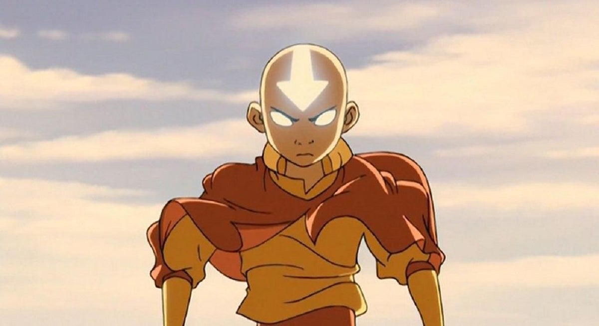
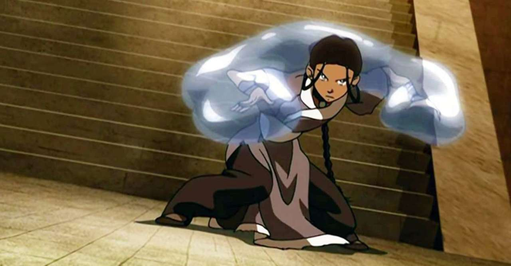
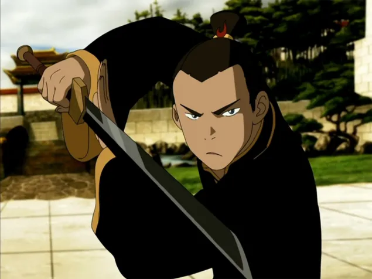

|  |  |
|  |
This kid here is Aang, he is the last living airbender, and the Avatar (only person that can you 4 elements Fire, Water, Earth, and Air). When finally awakens he has to learn the other 4 elemets in order to sop the fire nation who have taken over the world. Next we have Katara, a native of the southern water tribe, and only water bender of her generation. She and her brother found aang and she is now aang's waterbending teacher. Lastly we have Sokka, Katara's older brother, although he is not a waterbender he is a decent hand to hand combat fighter in dire situations.